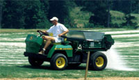

| education |
| home page |
|
These features require the latest shipping version of Time Matters and may require the most recent Service Release. . Capture elements of the Web Research, take notes, build research-based documents, and easily return to referenced sites. The Web Research system opens your browser and goes to the site while in Time Matters. ) While viewing the Web site, you can take notes on the information in a memo field. |
|  |